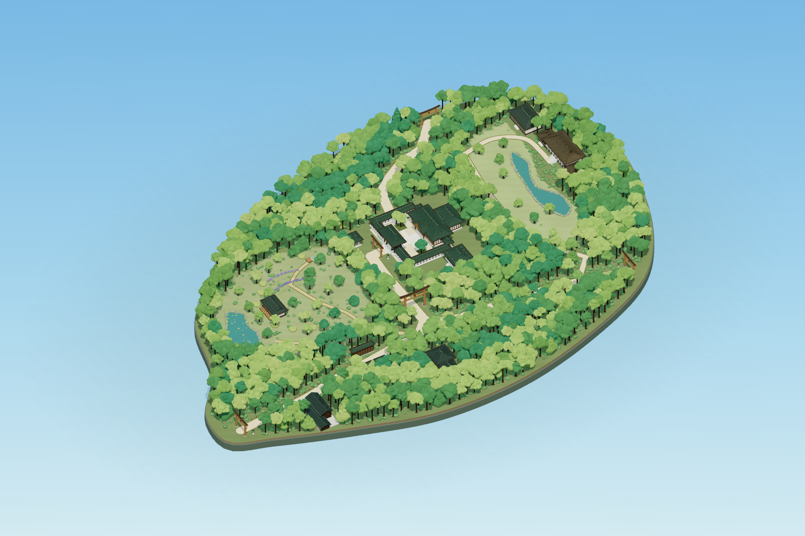

明治神宫 · 晴日森林
全园森林视觉版 · 2026-11-05。实体树木、林间参道、御苑、水岸、北部景观和附属建筑已经接入同一个可自由旋转的三维世界。原主神社、南神门、围廊与屋顶木构延续第一版。
以下全部来自安装版 Chrome 的实际 WebGL 截图。全园截图为 1800 × 1200、DPR 1、固定动画 t=0；没有 AI 生成图或截图后调色。

完整森林园区查看原图
保留核心区 · 同镜头检查
相机、目标点、缩放和动画时间与第一版固定截图一致；建筑几何与原核心区树木数量保持一致。两张原图均为 1600 × 1100。
运行记录
29 项检查通过。Chrome 156.0.8078.80，RTX 5060 Laptop，1920 × 1080、DPR 1。导航至首帧 2862 ms。
| 视角 | Draw Calls | 三角形提交 | 帧间隔中位 | P95 |
|---|
| 完整园区 | 489 | 4,894,946 | 4.2 ms | 4.4 ms |
| 神社近景 | 481 | 7,684,110 | 4.2 ms | 8.5 ms |
| 御苑近景 | 450 | 5,927,946 | 4.2 ms | 4.4 ms |
提交量含阴影；帧间隔包括显示调度，不是独立 GPU 执行时间。每个视角预热 900 ms 后取 240 个 RAF 样本。首帧耗时含自动化轮询，系统和 GPU 缓存未清空。移动测试为桌面 Chrome 触控模拟。